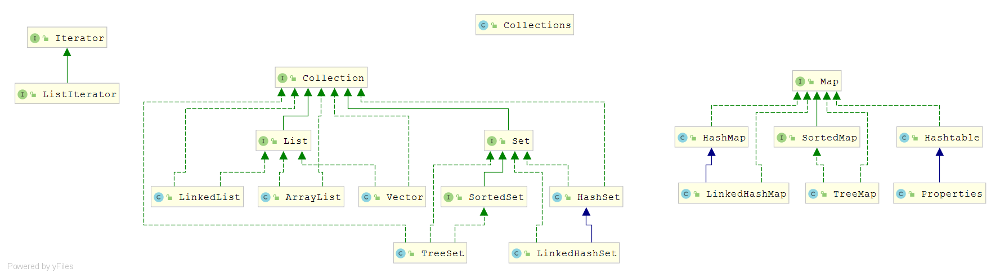

Java 中的容器主要可以分为四个大类，分别是 List、Map、Set 和 Queue。其中又可以分为 同步容器 和 并发容器，那么除了这两类容器外，剩下我们可以把它归类为 集合容器（暂且这么分类）。今天我们就来简单复习下 Java 中的集合类。

Java 中的集合包括三大类，它们是 Set（集）、List（列表）和 Map（映射），它们都处于 java.util 包中，Set、List 和 Map 都是接口，它们有各自的实现类。
Collection 是最基本的集合接口，声明了适用于 Java 集合的通用方法，list 和 set 都继承自 Collection 接口。
Collection接口的方法
boolean add(Object o)：向集合中加入一个对象的引用void clear()：删除集合中所有的对象，即不再持有这些对象的引用boolean isEmpty()：判断集合是否为空boolean contains(Object o)：判断集合中是否持有特定对象的引用Iterartor iterator()：返回一个Iterator对象，可以用来遍历集合中的元素boolean remove(Object o)：从集合中删除一个对象的引用int size()：返回集合中元素的数目Object[] toArray()：返回一个数组，该数组中包括集合中的所有元素
关于：Iterator() 和 toArray() 方法都用于集合的所有的元素，前者返回一个 Iterator 对象，后者返回一个包含集合中所有元素的数组。Collection 没有 get() 方法来取得某个元素。只能通过 iterator()遍历元素。
Iterator 接口声明了如下方法
hasNext()：判断集合中元素是否遍历完毕，如果没有，就返回truenext()：返回下一个元素remove()：从集合中删除上一个有next()方法返回的元素
List、Set、Map 的区别
结构特点
List和Set是存储单列数据的集合，Map是存储键值对这样的双列数据的集合；List中存储的数据是有顺序的，并且值允许重复；Set中存储的数据是无顺序的，并且不允许重复，但元素在集合中的位置是由元素的hashcode决定，即位置是固定的（Set集合是根据hashcode来进行数据存储的，所以位置是固定的，但是这个位置不是用户可以控制的，所以对于用户来说set中的元素还是无序的）。Map中存储的数据是无序的，它的键是不允许重复的，但是值是允许重复的；
实现类
List 接口有三个实现类
ArrayList基于数组实现，非线程安全，效率高，增删慢，查找快；LinkedList基于链表实现，链表内存是散列的，增删快，查找慢；Vector基于数组实现，线程安全，效率低，增删慢，查找慢；
适用场景：
当需要对数据进行多次访问的情况下选用 ArrayList；当需要对数据进行多次增加删除修改时采用 LinkedList；如果考虑到线程的安全因素，则用 Vector。
Set 接口有两个实现类：
HashSet底层是由HashMap实现，不允许集合中有重复的值，使用该方式时需要重写equals()和hashCode()方法；LinkedHashSet继承于HashSet，同时又基于LinkedHashMap来进行实现，底层使用的是LinkedHashMap；
适用场景：
HashSet 是基于哈希算法实现的，其性能通常都优于 TreeSet，存取速度快；在我们需要排序的功能时，我们才使用 TreeSet。
Map 接口有四个实现类
HashMap基于哈希表的Map接口实现，非线程安全，高效，支持null值和null键；HashTable线程安全，低效，不支持null值和null键；LinkedHashMap是HashMap的一个子类，保存了记录的插入顺序，先插入的先遍历到；SortMap接口，其实现类是TreeMap（非线程安全基于红黑树实现），能够把它保存的记录根据键排序，默认是键值的升序排序；
适用场景：
HashTable 线程安全，如果考虑到线程的安全因素，则用 HashTable；HashMap 适用于 Map 中插入、删除和定位元素；Treemap 适用于按自然顺序（按升序遍历）或自定义顺序遍历键 key；LinkedHashMap 保存了记录的插入顺序，先插入的先遍历到。
List、Set、Map 初始容量
初始容量：就是创建时可容纳的默认元素个数。
加载因子：表示某个阀值，用0~1之间的小数来表示，当已有元素占比达到这个阀值后，底层将进行扩容操作。
扩容方式，即指定每次扩容后的大小的规则，比如翻倍等。当底层实现涉及到扩容时，容器或重新分配一段更大的连续内存（如果是离散分配则不需要重新分配，离散分配都是插入新元素时动态分配内存），要将容器原来的数据全部复制到新的内存上，这无疑使效率大大降低。
|
Class |
初始大小 |
加载因子 |
扩容倍数 |
底层实现 |
Code |
是否线程安全 |
同步方式 |
|
ArrayList |
10 |
1 |
1.5倍 |
Object数组 |
int newCapacity = oldCapacity + (oldCapacity >> 1); |
线程不安全 |
- |
|
Vector |
10 |
1 |
2倍 |
Object数组 |
int newCapacity = oldCapacity +
((capacityIncrement > 0) ? |
线程安全 |
synchronized |
|
HashSet |
16 |
0.75f |
2倍 |
HashMap<E,Object> |
add方法实际调用HashMap的方法put |
线程不安全 |
- |
|
HashMap |
16 |
0.75f |
2倍 |
Map.Entry |
void addEntry(int hash, K key, V
value, int bucketIndex) { |
线程不安全 |
- |
|
Hashtable |
11 |
0.75f |
2倍+1 |
Hashtable.Entry数组 |
int newCapacity = (oldCapacity
<< 1) + 1; |
线程安全 |
synchronized |
If you like this blog or find it useful for you, you are welcome to comment on it. You are also welcome to share this blog, so that more people can participate in it. If the images used in the blog infringe your copyright, please contact the author to delete them. Thank you !